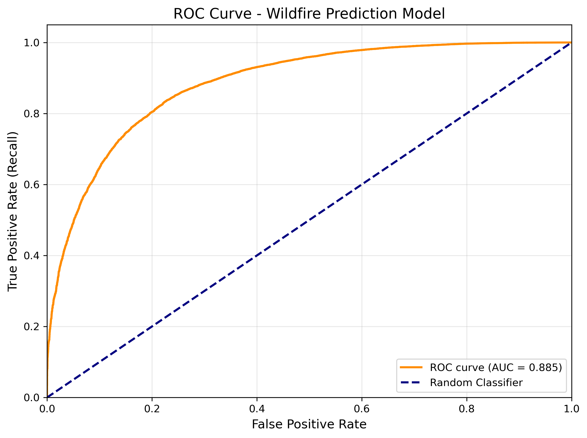
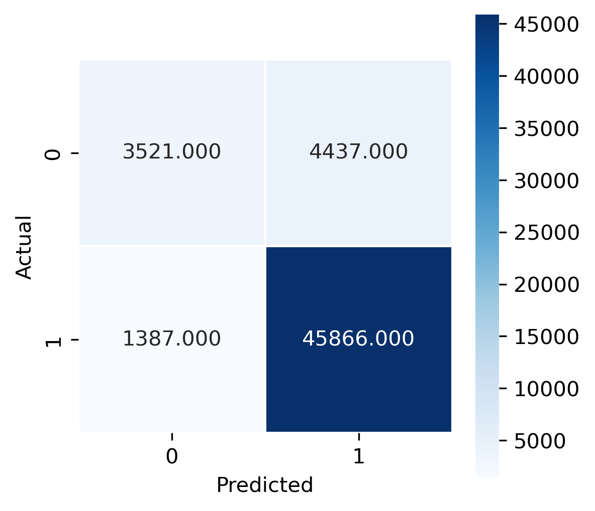

Data
Fire Event Data
MODIS FIRMS fire detection data (2015-2024) were obtained and spatially clipped to the Paraguayan Chaco region, resulting in 544,034 fire observations. Each fire event was assigned a unique identifier and retained essential attributes: date, coordinates, and fire status ("yes").
Fire Absence Generation
Non-fire observations were generated using stratified random sampling. For each year in the study period (2015-2024), 4,000 spatially random points were created within the Chaco boundary using GeoPandas' sample_points() method. Random dates were assigned to each point using a custom function accounting for month length and leap years, ensuring temporal distribution matched the fire event dataset. This process generated 40,000 non-fire observations, resulting in a final dataset of 584,034 observations.
Explanatory variables extraction
Predictor variables were extracted at each observation point location using Python's Earth Engine API and batch processing workflows to manage computational constraints.
Climate Variables (6-day temporal aggregation):
- Precipitation (CHIRPS Daily): Mean of preceding 6 days
- Wind speed (NOAA CFSV2): Calculated from U and V components using √(U² + V²), averaged over 6 days
- Maximum and minimum air temperature (NOAA CFSV2): 6-day averages
- Land surface temperature (MODIS MOD11A1): Most recent 8- day composite
- Potential evaporation (NOAA CFSV2): Most recent 8-day value Vegetation and Land Cover
- NDVI (Landsat 32-day composite): Most recent monthly composite
- Land use classification (MODIS MCD12Q1): Annual UMD classification
- Degree of urbanization (JRC GHSL): Settlement density classification
Proximity Variables
Distance rasters were generated in ArcGIS Pro using Euclidean distance calculations from:
- Road networks (Paraguayan National Statistics Institute)
- Water bodies (Paraguayan National Statistics Institute)
Model Training
The consolidated dataset was split into training (80%, n=467,227) and validation (20%, n=116,807) sets using stratified sampling to maintain class distribution. The binary target variable was encoded as 1 (fire) and 0 (no fire). The model was trained using Scikit-learn with the following optimized hyperparameters:
- Number of trees: 100
- Maximum tree depth: 20
- Minimum samples per split: 10
- Class weighting: Balanced
- Random state: 42
Hyperparameters were initially explored through 3-fold grid search cross-validation across 96 parameter combinations, with manual refinement to prioritize balanced performance between fire and non-fire detection.
Model Validation
The Random Forest model demonstrated strong predictive performance on the validation dataset:
- Accuracy: 89.1%
- ROC-AUC: 0.885
The model captures 95.3% of actual fire events

Only 4.7% of fires are missed 1,387 out of 47,253
